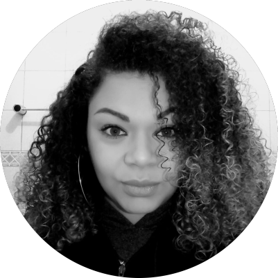

Nossa Equipe
Ryane Leão: Fundadora

Ryane Leão é poeta e professora cuiabana que vive em São Paulo. Publica seus escritos na página @ondejazzmeucoracao e recita seus poemas nos saraus e slams do Brasil.
Sua trajetória é pautada na resistência das mulheres e no fortalecimento pela arte e pela educação. Tem dois livros publicados: Tudo nela brilha e queima, e Jamais peço desculpas por me derramar (Editora Planeta). É do axé, filha de Oyá com Ogum, e seus ventos e espadas se espalham por aí trazendo mudanças efetivas e fertilizando terras coletivamente.
É fundadora e trabalha no gerenciamento da escola, da equipe, da metodologia e do material educacional da Odara. A escola foi escolhida por Yansã para ser espaço de acolhimento, novas narrativas e resgate da autoestima das mulheres negras (atualmente em expansão).
Partindo de nossas vivências nos identificamos, criamos laços confortáveis com nossas vozes, somos protagonistas de nosso conhecimento e nossas histórias e recriamos as possibilidades e perspectivas do povo preto.
A Odara abre portas no mercado de trabalho, no afroempreendedorismo, no âmbito acadêmico, na rotina e na memória de futuro através do ensino afrocentrado da língua inglesa.
Sejam bem vindxs ao nosso reinado educacional de identificação e fortalecimento!”
Jennifer Cornélio: Coordenadora Pedagógica

Jenniffer Cornélio - 33 anos, filha de Oyá, aquariana, paulista, conhecida como preta rainha.
Pedagoga, educadora, artevivenciadora, atua há 10 anos com educação formal e informal, produção de eventos culturais, acadêmicos, é afroempreendedora
Atua como educadora na editora Piraporiando na qual, trabalha em projetos focados na diversidade para uma educação antirracista, antibullying baseada no afeto e sem preconceitos.
Faz parte do coletivo de mulheres Império de Candaces, que tem seus projetos voltado em prol da emancipação, educacional, política e financeira da população negra.
Está em luta do abrir ao fechar dos olhos e acredita que a Odara é a veia pulsante, em prol de uma educação antirracista, decolonial e que abarca a população preta em todas as suas interseccionalidades.
Na Odara atua com coordenadora pedagógica, certa de que sem respeito, reconhecimento ancestral e afeto não se faz educação.
Leidy Ferreira: Relacionamento
“Se não é Oxum, eu nem sou!” Leidy Ferreira - 36 anos, filha de Oxum, pisciana, paulista de nascença e mineira no DNA.
Educadora, assessora de relacionamento, analista de risco, afroempreendedora, formada em Planejamento Estratégico e Logística, faz da vida um enorme roteiro remapeando-se diariamente, traçando rotas onde todos os seus possam transitar.
Acredita que é no relacionamento com os nossos que se fazem os (re)encontros das potências, vivências e parcerias.
Participou do coletivo Colab Mil Grau, que por meio da fotografia, audiovisual e intervenções artísticas, tange a importância da participação feminina nas artes, subvertendo o machismo presente. Participou do Coletivo BatucAfro, coletivo que visa o resgate da cultura africana por meio da dança, contação de histórias e teatro. Na Odara, atua no Relacionamento, financeiro e questões administrativas.
Odara pra mim é ter um sentimento constante de pertencimento, lugar onde construo diariamente minha relação enquanto Mulher Preta em Movimento. É reforço diário de mudança estrutural, seja ela econômica, psicológica, ancestral, intelectual e principalmente bilíngue.
Entende que a desconstrução diária é companheira no processo de autoconhecimento e cura.